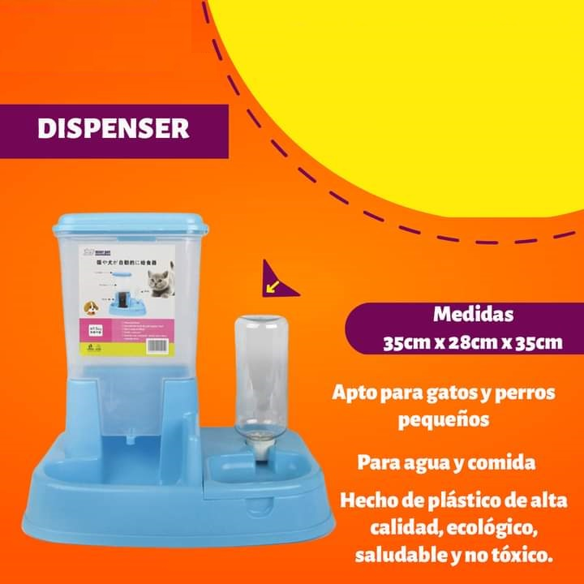
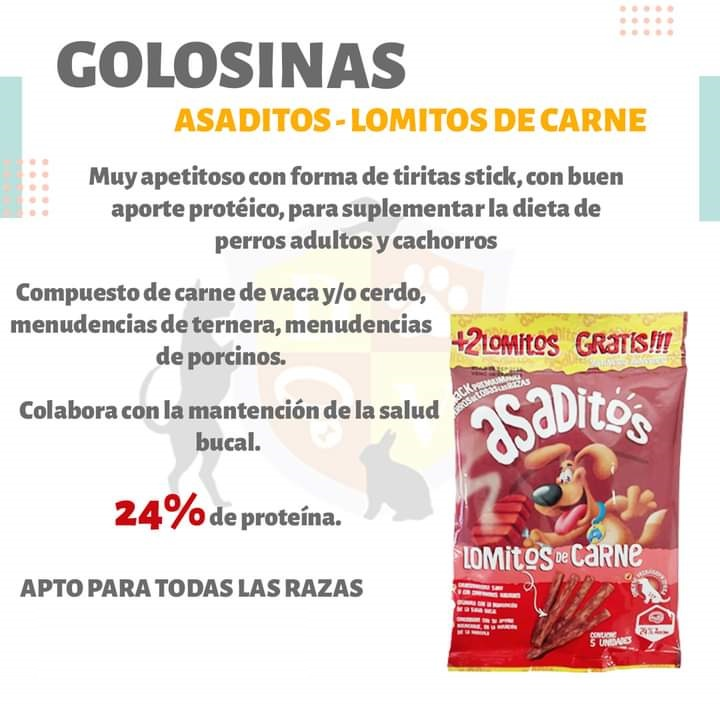
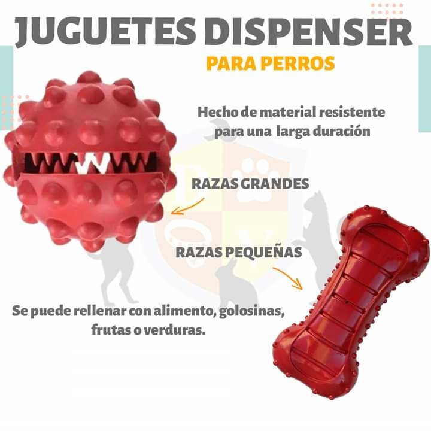
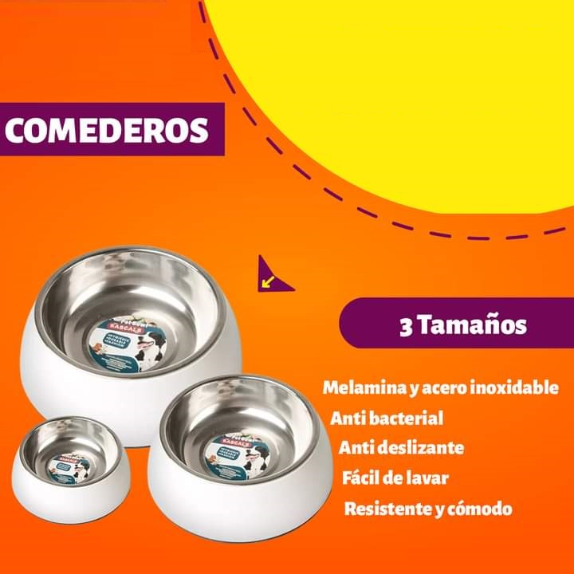
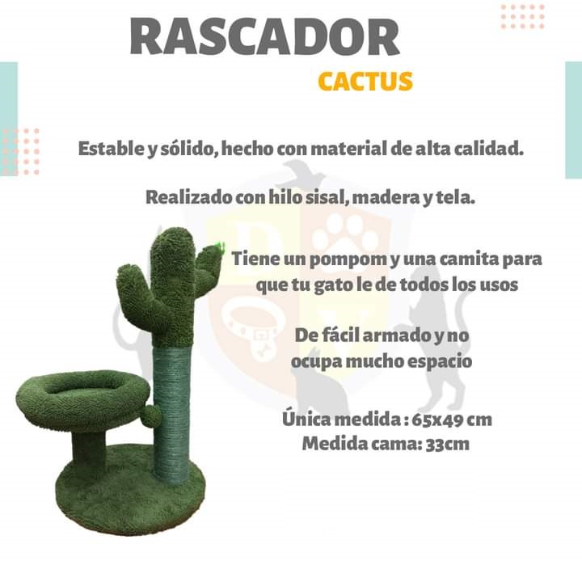

Productos para Mascotas
-

Alimento Can Club
Es un alimento completo y balanceado para un perro normalmente activo. Posee las proteínas, vitaminas, minerales y ácidos grasos necesarios que el perro adulto necesita para estar sano y está hecho con ingredientes de calidad.
-

Alimento Dar Win
DrDarwin High Evolution es un alimento superpremium para perros con actividad física intensa. Rico en carne de cordero y arroz, con extractos naturales de yuca para una mejor digestión, con omega 3 y omega 6 para una piel y pelo sanos y brillantes, con antioxidantes naturales, con taurina para una mejor función ocular y cerebral, con glucosamina y condroitina para unos huesos y articulaciones fuertes, elaborado en crujientes croquetas que reducen la aparición de sarro y placa en la dentadura de tu mascota. Su fórmula equilibrada aporta toda la energía que tu perro necesita pero controlando su peso ideal.
-

Alimento Dog Selection
DOG SELECTION CRIADORES está desarrollado para ser la dieta única e integral de nuestro perro. Es ideal para ofrecerlo desde el destete, sin el agregado de suplementos ni la combinación con otros alimentos.
-

Alimento Dr. Perrot
Alimento balanceado Dr. PERROT perros adultos. Presentación: Bolsa x 15 kg. Nutrición de calidad para el bienestar de tu perro. Los alimentos para perros Dr. PERROT están formulados para cubrir las necesidades básicas de las mascotas, posicionándose como un producto económico con una excelente fórmula balanceada.
-

Alimento Enlatado Gato
Los alimentos enlatados para gatos es una parte esencial de la dieta de tu gato. Si bien los gatos disfrutan de una variada selección de alimentos y deben recibir alimentos secos y húmedos, la comida para gatos enlatada tiene la ventaja de un alto contenido de agua, lo que ayuda a mantener a tu gatito hidratado.
-

Alimento Enlatado Perro
El alimento enlatado para perros tiene entre 375 y 950 kilocalorías metabolizables por Kg. El consumo total de alimento es alto ya que su contenido calórico es bajo. El balance de nutrientes está dado en gran medida por el tipo de tejido animal utilizado en la dieta.
-

Anti Cloro
Anticloro El anticloro es un producto químico que no posee ni olor ni color mayormente fabricado con Tiosulfato de sodio Na2S2O3, su utilización para cualquier tipo de pecera es muy común ya que acelera la evaporación del cloro produciendo una reacción química con este, 1 que sin esta reacción normalmente dura aproximadamente 24 horas.
-

Bocadito Para Gato
El Catnip Ball Deshidratado de ZOOTEC es un juguete 100% orgánico que atraerá a tu mascota, por lo que será irresistible jugar con ella. El gato puede lamerla y morderla y lo mantendrá entretenido. La hierba gatera anima a tus gatos a jugar, a moverse y hace que se sientan bien.
-

Bola Para Hamsters
Bola recreativa para hámster , ideal para esta clase de roedores que son muy activos. Esfera en acrílico que permite la ejercitación del hámster en espacios libres. Para más seguridad, el espacio debe estar libre de obstáculos y estar retirado de escaleras que puedan ocasionar accidentes. Tu mascota se divertirá al máximo, siendo muy recomendable para sacar de la jaula al animal de vez en cuando. Se recomienda jugar 30 minutos por cada sesión y luego devolver a la jaula. Disponible en diámetros de 19 cm (hámster sirios) y diámetros de 15 cm (hámster ruso) Colores: amarillo, lila, azul.
-

Bombacha Perro Gato
Son una solución simple e higiénica para la Temporada de las hembras en celo, o cachorros que aún están aprendiendo en casa - Para perros o gatos con incontinencia. Agradable material suave, esta bombacha es reutilizable, fácil de usar y lavar, ideal para mantener a su mascota en condiciones higiénicas y cómodas.
-

Caramelera Bocaditos
GoloCan son bocaditos o golosinas secas y húmedas para perros y gatos, elaboradas con dedicación artesanal, especiales para agasajar a sus mascotas en todo momento.- Son golosinas secas (galletas duras) y blandas (semi-húmedas) que no requieren refrigeración.
-

Comedor Plegable
Comedero plegable para perros, práctico accesorio para mascotas en todos los sentidos: ligero, resistente, fácil de lavar, cómodo para llevar a todas partes, tamaño ideal. Completa los paseos de tu perro con este original plato plegable que por su composición también puede ser utilizado como bebedero.
-

Dispenser
Apto para perros pequeños o gatos- Contenedor giratorio con dos aperturas para agua o alimento. Dispensa el alimento o agua de forma automática- Es antideslizante y estable- Fácil de rellenar- Mantiene el alimento y agua frescos- Fabricado en materiales aptos para su mascota- Transparente para controlar la cantidad- Apto lavavajillas- Fácil de limpiar- Capacidad: 1,5lts- Material: Plástico.
-

Dispernser Champu
Con un diseño dispensador de champú, el cepillo de masaje para perros brinda un baño rápido y completo para sus mascotas y masajea la piel para mejorar la circulación sanguínea. La cerda del cepillo de silicona es muy suave, por lo que no dañará la piel de su mascota. El dispensador de champú para mascotas acepta todo tipo de líquido.
-

Golosinas
GOLOSINA ASADITOS es un suplemento alimenticio producido con carnes frescas y con ingredientes seleccionados. entretenimiento sano y con componentes naturales Colabora con la mantención de la salud bucal Contribuye con su aporte nutricional, en la nutrución de la mascota.
-

Juguetes
Comedero con dispenser automático para perros y gatos. El sistema es automático porque permite que el comedero siempre se mantenga lleno. Contiene goma antideslizante en sus extremos para evitar el movimiento. Producto no tóxico, apto para el uso de mascotas.
-

Oreja de Chancho
Recomendado para perros medianos y grandes Entretenimiento asegurado, evita que tu peludo muerda objetos o muebles *1 unidad Ingredientes: 100% Oreja de cerdo deshidratada Información Nutricional: Proteína 73%, contenido en grasa 15%, humedad 12% + Ingredientes 100% naturales, sin conservantes ni procesados y de origen nacional.
-

Pelota de Tela
Medida: 37cm de circunferencia * Pelota apta para agua. * Ningún juguete para perro/gato es indestructible. Se debe prestar atención a la forma de juego de su mascota, ya que si la intención es romperlo es posible que lo haga.
-

Platos
El comedero/bebedero se puede usar para almacenar comida o agua para su mascota - De acero inoxidable - Con base antideslizante - Ideal para gatos y razas medianas - Capacidad: 150 ml MEDIDAS: CIRCUNFERENCIA BOCA 45 cm - Medidas: base 21,5 cm - boca 14 cm - alto 6 cm. Consultar por otras medidas.
-

Rascador
Este rascador para gatos de bonito diseño en forma de cactus está fabricado con hilo sisal, madera y tela. La superficie preparada para rascar es de fibra de polipropileno reciclada. Se trata de un rascador para gatos estable, robusto, duradero y de fácil mantenimiento.
-

Toallas Humedas
Toallitas húmedas para limpieza rápida y fácil de tus mascotas. Elimina mugre y bacterias, a la vez que limpia y deodoriza, dejando un agradable aroma cítrico. Ideales para limpiar zona interna de las orejas y almohadillas de patitas.